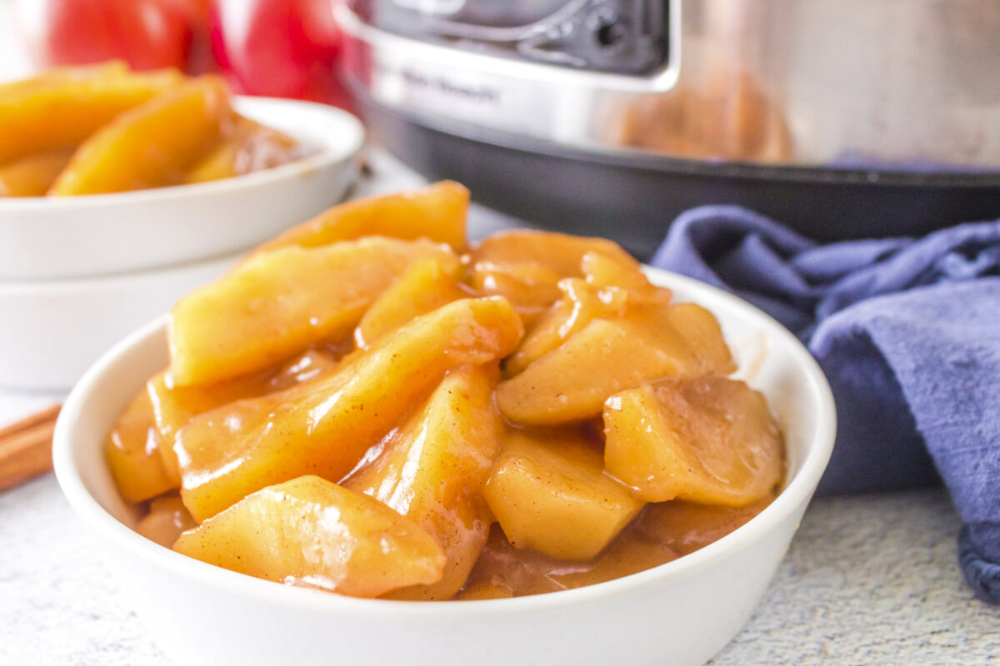

Fried Apples

Description
These delectably sweet apples are a wonderful treat. Soft, gooey, cinnamon-y, wonders, they are perfect on their own, as a filling in a pie, adorning a
pastry, topping your favorite ice cream, or, my personal favorite, stacked on top of fresh made pancakes. They are fresh and fragrant in the summer,
yet warm and comforting in the winter. These fried apples certainly don't disappoint!
Ingredients
- 3 tbsp unsalted butter
- 4 apples, sliced thin(can be any variety, but I prefer Fuji or Honeycrisp apples)
- 2/3 cup water
- 1/2 cup brown sugar
- 1/2 tsp cinnamon
- 1/8 tsp nutmeg
- 1 tsp pure vanilla extract
- 1 1/4 tsp corn starch
Directions
- In a large skillet on medium-low heat, melt the butter.
- Add apple slices into the melted butter and cook until soft (approximately 5-7 minutes).
- Add 1/3 cup of water, brown sugar, cinnamon, nutmeg, and vanilla extract. Stir until incorporated.
- In the remaining 1/3 cup of water, dissolve your corn starch. Do not skip this step! Adding corn starch on its own into the skillet
will immediately cause it to harden and ruin your apples!
- Add your watery corn starch mixture into the skillet and bring to a boil.
- Boil until the mixture thickens to your desired thickness.
- Remove from the heat and enjoy!
Recommended Pairings